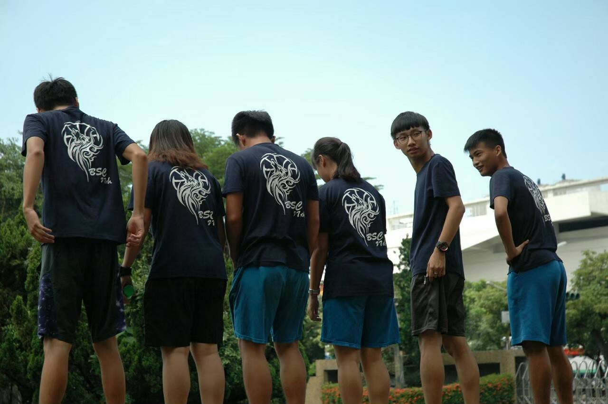
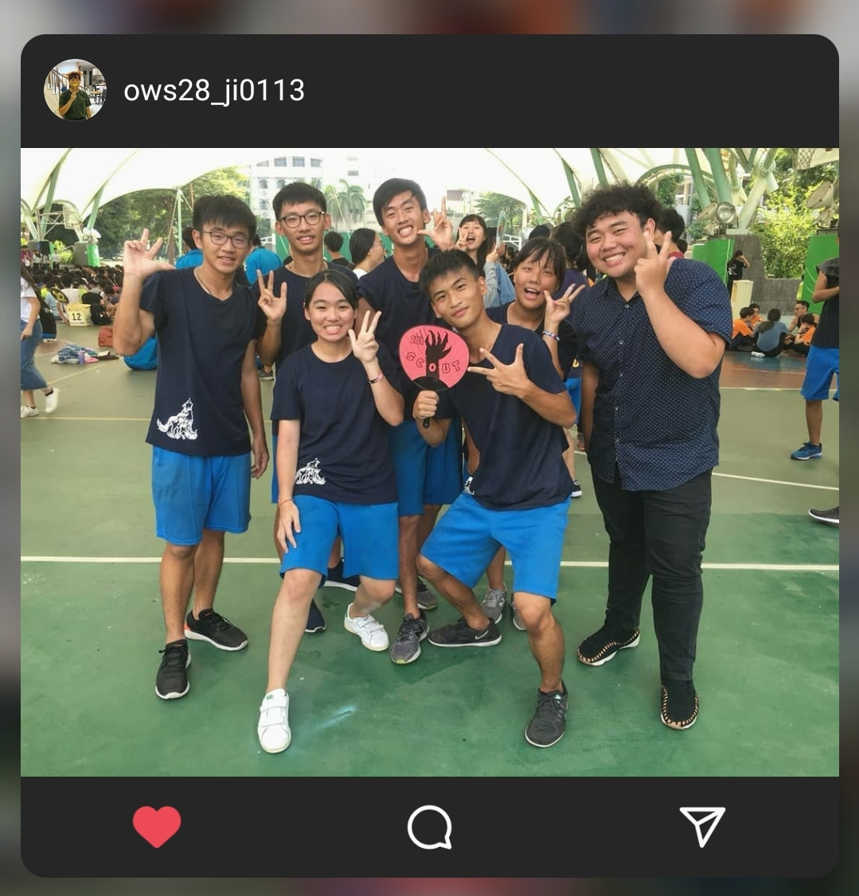
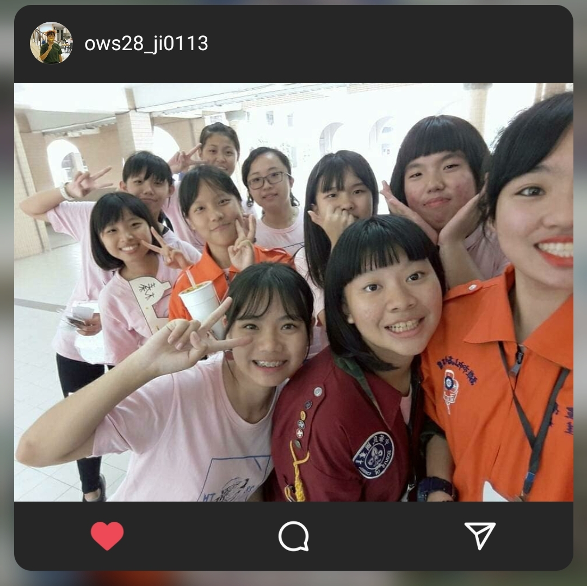
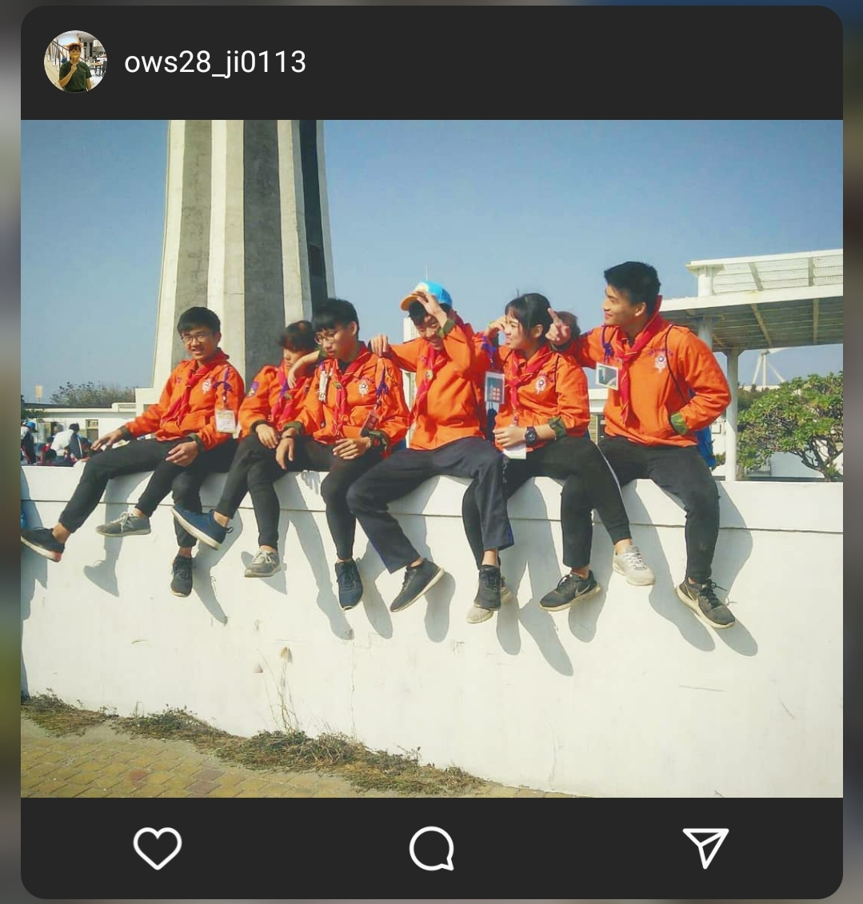
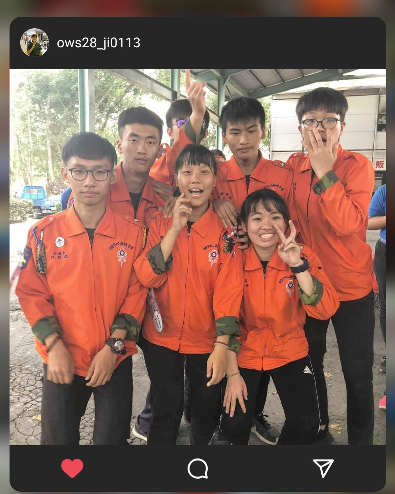
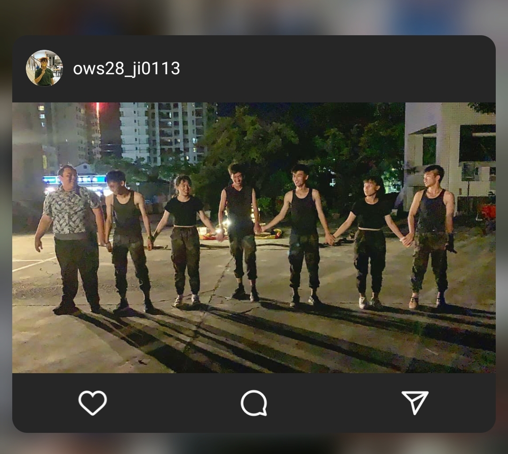
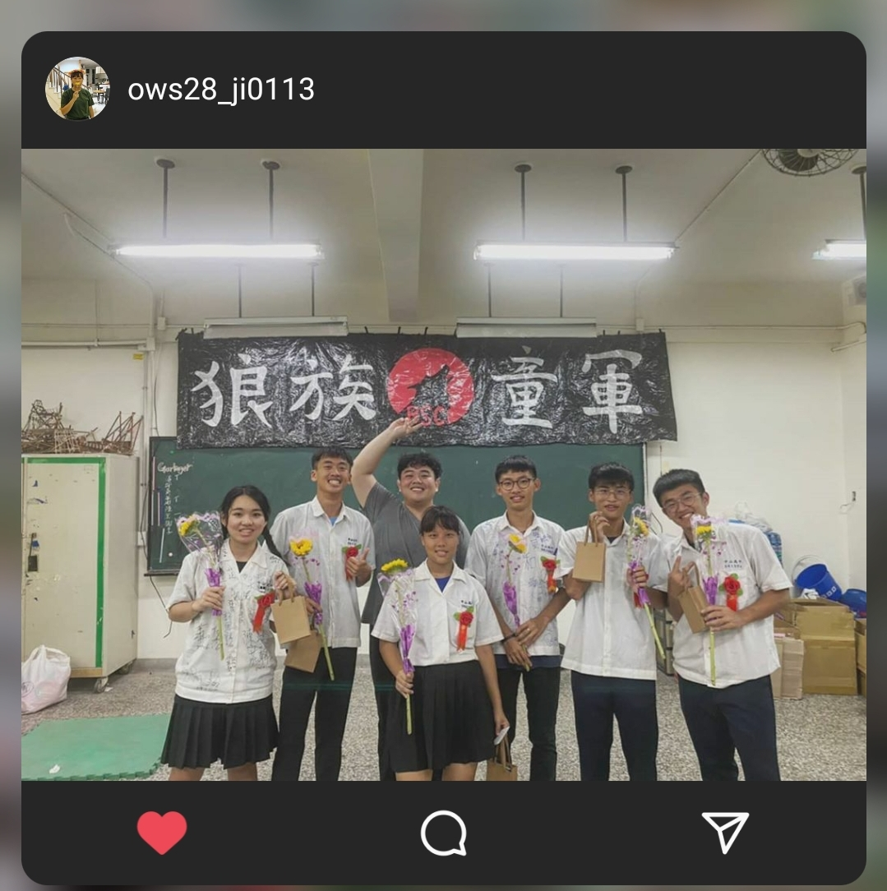
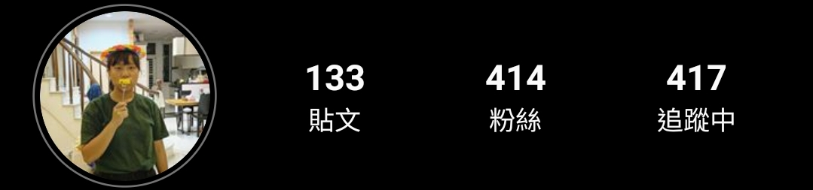
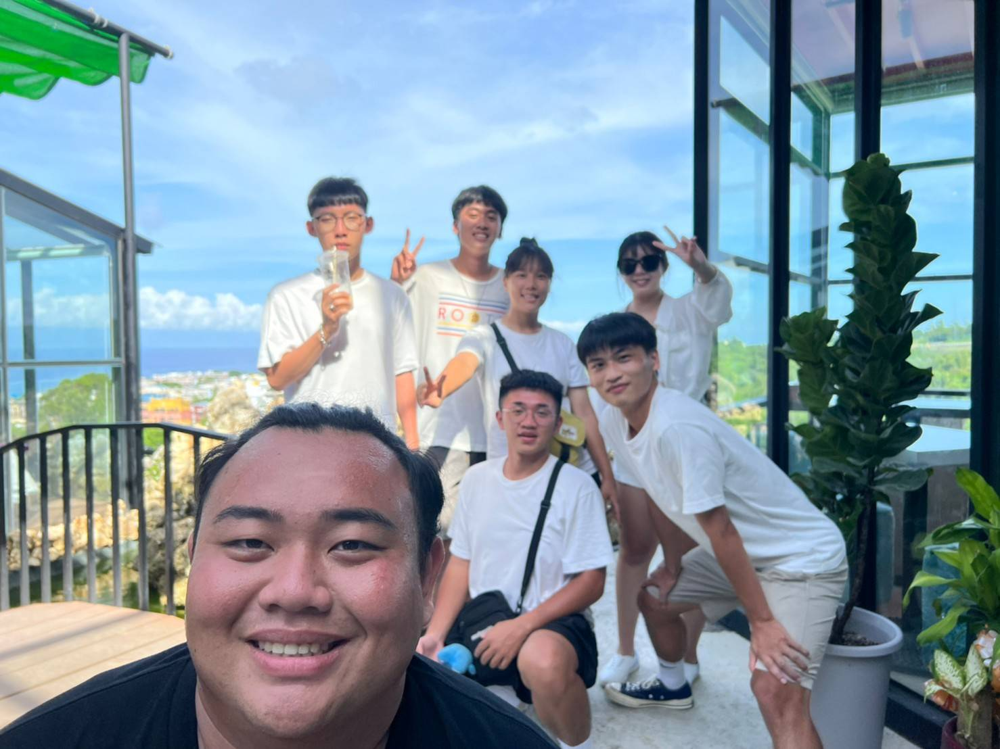
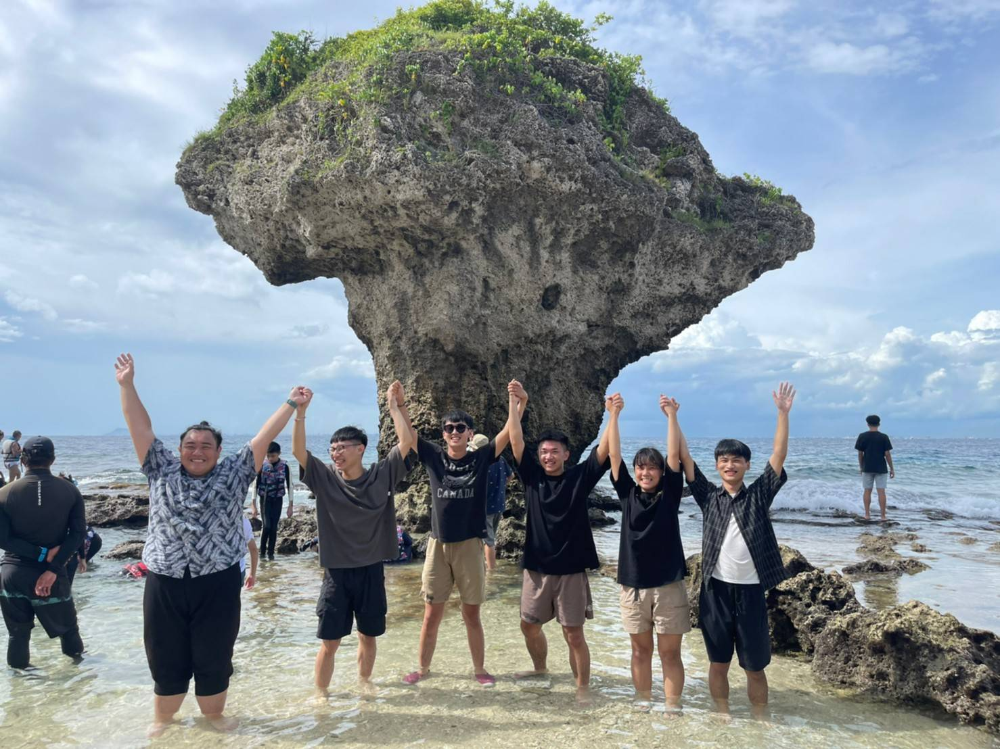

<!DOCTYPE html>
<html>
<head>
<title>Page Title</title>
</html>
</head>
<body>
<span style='font-size:100px;'>&#127795;</span>
<h1>我的高中童軍生活(my scout life in senior high school)</h1>
<p>高中誤打誤撞的進入童軍社，從學員成為了幹部。</p>
<!DOCTYPE html>
<html>
<body>

<p>當學員的時候，我們6個對彼此其實非常不熟悉。</p>
<p>是一起當上幹部之後，開始磨合，才成為高中生活中最不可或缺的朋友，甚至算是家人般的存在。</p>
<p>不管經歷了多久，到現在我還是很感謝他們出現在我的生命裡!</p>
</body>
</html>
</body>
</html>
<!DOCTYPE html>
<html>
<body>
<h1>活動生涯</h1>
<p>20180801社團博覽會</p>
<p>這是我們當上幹部的第一個活動，是好的開始!</p>

<p>20181027五校聯合迎新</p>
<p>一起辦的第二個活動</p>
<p>順便認識了許多外校夥伴</p>

<p>20190122-20190126全國大露營</p>
<p>被寒流摧殘的五天，冷到4天沒有洗澡....</p>

<p>20190201-20190203五校聯合寒訓</p>
<p>和迎新的夥伴們一起辦的第二個活動，一樣是很冷的三天...</p>

<p>20190601狼族團慶</p>
<p>幹部生涯的經典&最難忘的回憶</p>
<p>整個活動的規劃及進行，都是我們慢慢堆積出來的</p>
<p>過程中大家鬧得很不愉快，但我們都沒有忘記共同的目標</p>
<p>活動圓滿落幕</p>

<p>20200616畢業典禮</p>

<hr>
<h2>我滴夥伴們</h2>
<p>劉子謙</p>
<p>賴逸凱</p>
<p>許恩誌</p>
<p>劉峻菖</p>
<p>蘇佳妤</p>
<p>!!我!!</p>
 
<p>備註:ows28的由來</p>
<p>卸幹之後不知道要甚麼名字 於是就想說統一一個稱呼</p>
<p>o:old   老(帶稱卸幹)</p>
<p>w:wolf  狼(我們童軍的代表是一隻狼)</p>
<p>S:scout 童軍</p>
<p>28:我們是第28屆幹部</p>
 
 <p>附上近期的我們</p>
</body>
</html>
